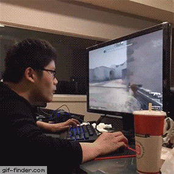

When buying a monitor you may want to consider Hertz(frequency) and milliseconds(response).
This tool takes a closer look at how this works together with FPS.

What does Hz and ms mean and/or matter?
FPS is the graphics card ability in your computer to deliver images/frames to show on your monitor. Hz is the monitor's ability to
show images per second. If the specification is 60 Hz, then there is a 1 sec (1000 ms) divided at 60 = ~16.67 ms requirement to be able to
show every image at that frequency. You'll want to stay under this to have a slight margin and prevent artifacts or ghosting between screen updates.
Why does even less ms matter then, if only a certain delay is needed to match the Hz?
Imagine that the GPU draws a new image but it's not ready exactly at the ~16 ms mark. This will likely cause the previous frame to draw
twice and effectively cause less FPS than the GPU is able to generate. This is where less ms becomes meaningful. With less response delay (ms)
there is a higher chance of showing FPS in real time when Hz and FPS is out of sync. Depending on GPU driver and game settings, you may experience
a certain "bungee cord" effect and/or skipped frames unless you're able to sync the game/FPS and refresh rate (Hz).